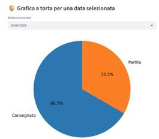
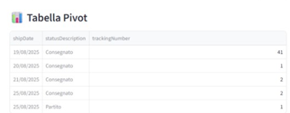
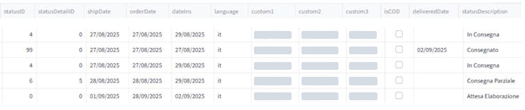
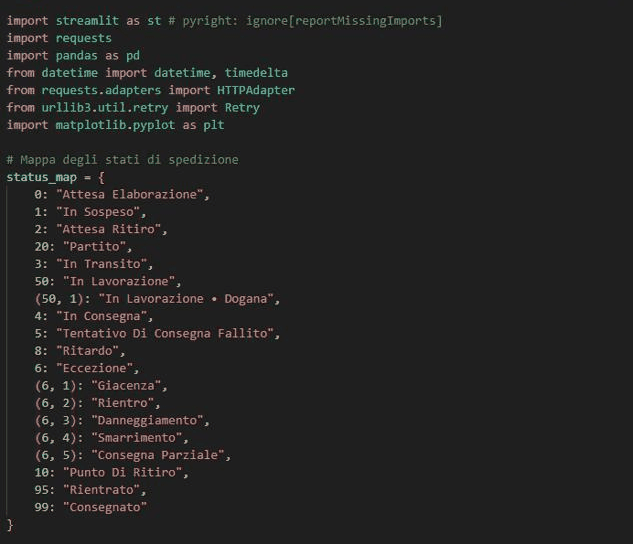

Il problema
I team operativi e logistici avevano bisogno di una vista quasi in tempo reale delle spedizioni legate a uno specifico account cliente. I dati stavano in una piattaforma di tracking e andavano estratti a mano, poi puliti prima di poterli usare.
Gli export grezzi contenevano duplicati, codici di stato numerici poco leggibili e date in formati non uniformi.
La soluzione
Un'applicazione Python che esegue l'intero flusso e presenta il risultato in una dashboard interattiva:
RecuperoChiamate API giornaliere su più tipi di data, rotazione delle chiavi e retry automatici
PuliziaDeduplicazione per tracking number e normalizzazione delle date
TraduzioneCodici di stato numerici convertiti in descrizioni leggibili
ConsegnaDashboard Streamlit ed export Excel filtrato
Cosa comprende la soluzione
Tabella datiSpedizioni filtrate per l'account selezionato
Tabella pivotSpedizioni per data di spedizione e stato
Grafico a barreDistribuzione degli stati nel tempo
Grafico a tortaRipartizione degli stati per un giorno a scelta
Export ExcelCopia dei dati filtrati per archivio e audit
Chiamate robusteRichieste HTTP con retry e gestione degli errori




Risultati
- Estrazione manuale quotidiana sostituita da un recupero automatico
- Un record pulito per ogni spedizione, senza duplicati
- Stati leggibili da chiunque, non solo da chi conosce i codici
- Uno script riutilizzabile con output Excel per archivio e audit
Stack
Python
Streamlit
Pandas
REST API
Matplotlib
Excel
Nomi dei clienti e dati riservati sono stati omessi. Le immagini in questa pagina non contengono dati di clienti.